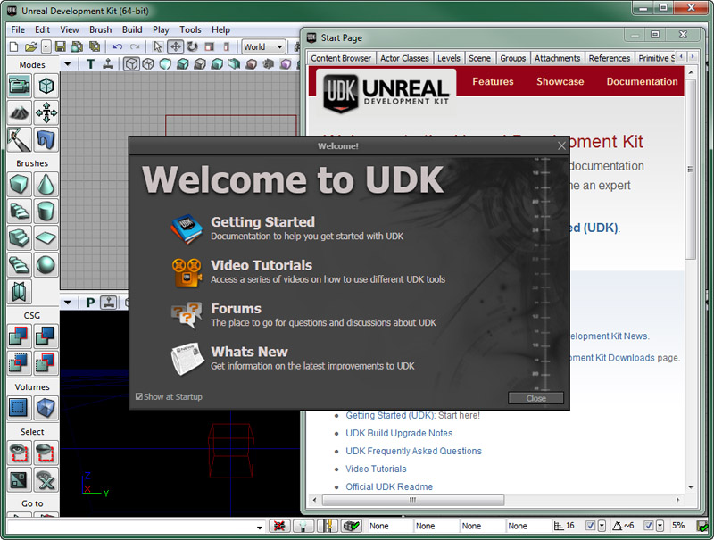
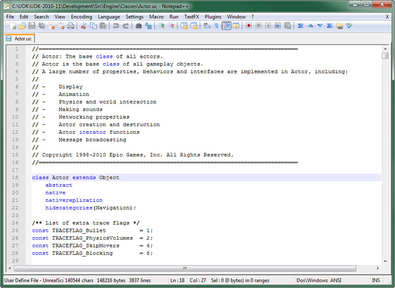

UDN
Search public documentation:
GettingStartedEngineCH
English Translation
日本語訳
한국어
Interested in the Unreal Engine?
Visit the Unreal Technology site.
Looking for jobs and company info?
Check out the Epic games site.
Questions about support via UDN?
Contact the UDN Staff
日本語訳
한국어
Interested in the Unreal Engine?
Visit the Unreal Technology site.
Looking for jobs and company info?
Check out the Epic games site.
Questions about support via UDN?
Contact the UDN Staff
UE3 主页 > 入门指南: 虚幻引擎 3 >入门指南: 引擎设置
入门指南: 引擎设置
概述
获得适当的虚幻引擎3或虚幻开发工具包版本是开始真正进行游戏开发过程的第一步。获得及设置虚幻引擎3的过程根据您是虚幻引擎3的授权用户还是使用虚幻开发工具包而有所不同。 授权用户 使用授权的虚幻引擎3的工作室的团队主管需要连接Epic的Perforce服务器来下载或同步到最新的经过QA验证的版本。然后需要创建一个新的项目并把它添加到UE3解决方案中。然后在测试之前应该先编译引擎并构建脚本，以确保一切可以按照期望的方式工作。当完成这些操作后，技术团队的其他人员就可以开始进行开发工作了。 UDK用户 使用虚幻开发工具包(UDK)的开发人员设置进行开发的过程稍微简单一些。首先，必须下载安装最新版本的UDK。然后，创建一个新的脚本项目，并把它添加到引擎中。一旦所有这些完成，便可以开始进行开发了。获得虚幻开发工具包 (UDK)
非授权用户可以使用虚幻开发工具(UDK)来开发PC和Apple iOS游戏,UDK仅是虚幻引擎3的二进制文件版本。
获得UDK的步骤非常简单。简单地跳转到 UDK下载页面来下载最新的版本就好了。设置编码环境
一旦您已经获得了引擎的适当版本，那么下一步是设置您的编码环境。授权用户这里需要额外的步骤进行设置，因为它们必须设置Visual Studio和UE3解决方案，包括创建它们的自定义游戏项目。UDK用户需要创建他们自己的UnrealScript编码环境，并且也需要创建它们的自定义游戏项目。创建UnrealScript
任何使用虚幻引擎3或虚幻开发工具的开发人员都会使用UnrealScript. 这就意味着要设置一个编码环境，并创建一个或多个UnrealScirpt项目。 UnrealScript 编码环境 使用虚幻引擎3进行游戏性方面编程的人需要设置编码环境来书写UnrealScript脚本。
对于UnrealScript编程来说没有单一的解决方案，可以使用文本编辑器或集成开发环境进行编写。有几个选择可供使用，包括从类似于Notepad++或ConTEXT这样的简单的文本编辑器到类似于nFringe或WOTGreal这样的完全的集成开发环境。您选择使用这些工具中的那个由您自己的个人偏好决定。Epic开发人员主要使用nFringe，因为它直接集成到了开发人员都正在使用的Visual Studio中。 自定义UnrealScript项目 除了设置编码环境，还必须创建一个新的UnrealScript项目。UnrealScript项目由一个单独的包或多个包组成，用于包含有些的UnrealScripts，从而确保在编译时使引擎知道包含这些文件。 要了解创建自定义 UnrealScript 游戏项目的详细指南，请参阅自定义 UnrealScript 项目页面。